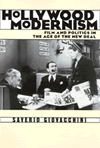
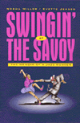
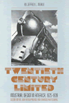

|
|
Achieving
Against the Odds
How Academics Become Teachers of Diverse Students
Kingston-Mann,
Esther, and Tim Sieber
Compelling essays on non-traditional students written by non-traditional
faculty
240 pp • 6x9 • Spring 2001
paper 1-56639-851-7
EAN 978-1-56639-851-0
cloth 1-56639-850-9
EAN 978-1-56639-850-3
|
|
|
A
Century of Philadelphia Sports
Westcott,
Rich, and Edward G. Rendell
An engaging history of sports in the Philadelphia area during
the twentieth century
400 pp • 7x10 • Spring 2001
cloth 1-56639-861-4
EAN 978-1-56639-861-9
|
|
|
The
Critical Study of Work
Labor, Technology, and Global Production
Baldoz,
Rick, Charles Koeber, and Philip Kraft
Essays that challenge the benefits of globalization and new technologies
296 pp • 7x10 • Spring 2001
paper 1-56639-798-7
EAN 978-1-56639-798-8
cloth 1-56639-797-9
EAN 978-1-56639-797-1
|
|
|
Dark
Continent of Our Bodies
Black Feminism and the Politics of Respectability
White,
E. Frances
A spirited and provocative engagement of black feminism
208 pp • 5.5x8.25 • Spring 2001
paper 1-56639-880-0
EAN 978-1-56639-880-0
cloth 1-56639-879-7
EAN 978-1-56639-879-4
|
|
|
The
Effects of the Nation
Mexican Art in an Age of Globalization
Good,
Carl, and John V. Waldron
How are national identity and the arts intertwined?
232 pp • 6x9 • Spring 2001
paper 1-56639-866-5
EAN 978-1-56639-866-4
cloth 1-56639-865-7
EAN 978-1-56639-865-7
|
|
|
Elie
Wiesel and the Politics of Moral Leadership
Chmiel,
Mark
A sobering critique of the renowned Jewish writer and philosopher
Wiesel
248 pp • 6x9 • Spring 2001
cloth 1-56639-857-6
EAN 978-1-56639-857-2
|
| 
|
From
Good Will to Civil Rights
Transforming Federal Disability Policy
Scotch,
Richard K.
An updated edition of the landmark book on disability policy
232 pp • 5.5x8.25 • Spring 2001
paper 1-56639-897-5
EAN 978-1-56639-897-8
cloth 1-56639-896-7
EAN 978-1-56639-896-1
|
|
|
Great
Home Runs of the 20th Century
Westcott,
Rich
Veteran sportswriter champions 30 of the most memorable homers—from
Babe Ruth to Mark McGwire and Sammy Sosa
232 pp • 6x9 • Spring 2001
cloth 1-56639-858-4
EAN 978-1-56639-858-9
|
|
|
Historical
Thinking and Other Unnatural Acts
Charting the Future of Teaching the Past
Wineburg,
Sam
How do historians know what they know?
272 pp • 6x9 • Spring 2001
paper 1-56639-856-8
EAN 978-1-56639-856-5
cloth 1-56639-855-X
EAN 978-1-56639-855-8
|
| 
|
Hollywood
Modernism
Film and Politics in the Age of the New Deal
Giovacchini,
Saverio
An intellectual history of the Hollywood community and its wartime
films
304 pp • 6x9 • Spring 2001
paper 1-56639-863-0
EAN 978-1-56639-863-3
cloth 1-56639-862-2
EAN 978-1-56639-862-6
|
|
|
Law
and Order and School
Daily Life in an Educational Program for Juvenile Delinquents
Birnbaum,
Shira
A powerful look at the state of a juvenile justice agency and
its effect on the students it serves
208 pp • 5.5x8.25 • Spring 2001
paper 1-56639-870-3
EAN 978-1-56639-870-1
cloth 1-56639-869-X
EAN 978-1-56639-869-5
|
| 
|
Legal
Bases
Baseball and the Law
Abrams,
Roger I.
An accessible, insightful look at how baseball and salary arbitration
are shaped by law
New in Paperback!
240 pp • 6x9 • Spring 1998
paper 1-56639-890-8
EAN 978-1-56639-890-9
|
|
|
Mapping
Gay L.A.
The Intersection of Place and Politics
Kenney,
Moira Rachel
How gays and lesbians put themselves on the map of Los Angeles
240 pp • 5.5x8.25 • Spring 2001
paper 1-56639-884-3
EAN 978-1-56639-884-8
cloth 1-56639-883-5
EAN 978-1-56639-883-1
|
|
|
Modern
American Queer History
Black,
Allida M.
Essays considering the history of queer lives in America
312 pp • 7x10 • Spring 2001
paper 1-56639-872-X
EAN 978-1-56639-872-5
cloth 1-56639-871-1
EAN 978-1-56639-871-8
|
|
|
Music,
Talent, and Performance
A Conseratory Cultural System
Kingsbury,
Henry
An anthropologist's unusual ethnography of an American conservatory
New in Paperback!
228 pp • 5.5x8.25 • Spring 1988
paper 1-56639-891-6
EAN 978-1-56639-891-6
|
| 
|
Rubble
Films
German Cinema in the Shadow of the Third Reich
Shandley,
Robert R.
An insightful analysis of German film in the immediate postwar
era
240 pp • 6x9 • Spring 2001
paper 1-56639-878-9
EAN 978-1-56639-878-7
cloth 1-56639-877-0
EAN 978-1-56639-877-0
|
|
|
Seeking
Community in a Global City
Guatemalans and Salvadorans in Los Angeles
Hamilton,
Nora, and Norma Stoltz Chinchilla
A look at the challenges faced by Central American immigrants
in Los Angeles
304 pp • 6x9 • Spring 2001
paper 1-56639-868-1
EAN 978-1-56639-868-8
cloth 1-56639-867-3
EAN 978-1-56639-867-1
|
| 
|
Sportsex
Miller,
Toby
How people perform their sexual identities as athletes and spectators
192 pp • 6x9 • Spring 2001
cloth 1-56639-864-9
EAN 978-1-56639-864-0
|
|
|
St.
Louis
The Evolution of an American Urban Landscape
Sandweiss,
Eric
The changing contours of a classic American city
296 pp • 7x10 • Spring 2001
paper 1-56639-886-X
EAN 978-1-56639-886-2
cloth 1-56639-885-1
EAN 978-1-56639-885-5
|
|
|
Still
the Big News
Racial Oppression in America
Blauner,
Bob
A forceful argument that matters of race and racism still divide
us
288 pp • 6x9 • Spring 2001
paper 1-56639-874-6
EAN 978-1-56639-874-9
cloth 1-56639-873-8
EAN 978-1-56639-873-2
|
| 
|
Swingin'
at the Savoy
The Memoir of a Jazz Dancer
Miller,
Norma, and Evette Jensen
A celebration of a life of dancing the Lindy Hop
New in Paperback!
304 pp • 6x9 • Fall 1996
paper 1-56639-849-5
EAN 978-1-56639-849-7
|
|
|
Taking
It Personally
Racism in the Classroom from Kindergarten to College
Berlak,
Ann, and Sekani Moyenda
A moving account of the possibilities of fighting racism in our
schools
216 pp • 6x9 • Spring 2001
paper 1-56639-876-2
EAN 978-1-56639-876-3
cloth 1-56639-875-4
EAN 978-1-56639-875-6
|
|
|
Transgender
Care
Recommended Guidelines, Practical Information, and Personal Accounts
Israel,
Gianna E., Donald E. Tarver, and Diane Shaffer
An outstanding reference work by specialists for the transgendered
New in Paperback!
304 pp • 6x9 • Fall 1997
paper 1-56639-852-5
EAN 978-1-56639-852-7
|
| 
|
Twentieth
Century Limited
Industrial Design in America, 1925-1939
Meikle,
Jeffrey
The classic, indispensable introduction to industrial design
in the last century—available again
264 pp • 7x10 • Spring 2001
paper 1-56639-893-2
EAN 978-1-56639-893-0
cloth 1-56639-892-4
EAN 978-1-56639-892-3
|
|
|
Unthinking
Social Science
The Limits of Nineteenth-Century Paradigms
Wallerstein,
Immanuel
A classic in sociological thought—now back in print!
304 pp • 6x9 • Spring 2001
paper 1-56639-899-1
EAN 978-1-56639-899-2
cloth 1-56639-898-3
EAN 978-1-56639-898-5
|
|
|
Why
Our Drug Laws Have Failed and What We Can Do About It
A Judicial Indictment of the War on Drugs
Gray,
Judge James P.
A devastating indictment of the War on Drugs
288 pp • 6x9 • Spring 2001
paper 1-56639-860-6
EAN 978-1-56639-860-2
cloth 1-56639-859-2
EAN 978-1-56639-859-6
|
|
|
Youth
at Work
The Unionized Fast-food and Grocery Workplace
Tannock,
Stuart
An ethnographic study of young unionized workers in the U.S.
and Canada
264 pp • 6x9 • Spring 2001
paper 1-56639-854-1
EAN 978-1-56639-854-1
cloth 1-56639-853-3
EAN 978-1-56639-853-4
|